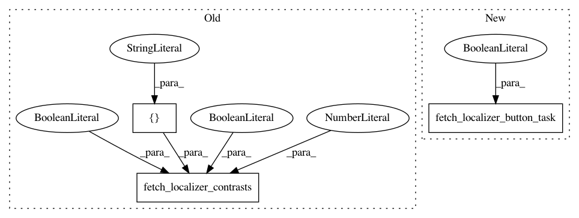

d28bfb96b0313dc493527b8af7a1820d80471c59,examples/04_manipulating_images/plot_resample_to_template.py,,,#,16
Before Change
template = load_mni152_template()
localizer_dataset = fetch_localizer_contrasts(
["left vs right button press"],
n_subjects=1,
get_anats=True,
get_tmaps=True)
localizer_tmap_filename = localizer_dataset.tmaps[0]
localizer_anat_filename = localizer_dataset.anats[0]
After Change
template = load_mni152_template()
localizer_dataset = fetch_localizer_button_task(get_anats=True)
localizer_tmap_filename = localizer_dataset.tmaps[0]
localizer_anat_filename = localizer_dataset.anats[0]
In pattern: SUPERPATTERN
Frequency: 3
Non-data size: 3
Instances
Project Name: nilearn/nilearn
Commit Name: d28bfb96b0313dc493527b8af7a1820d80471c59
Time: 2016-06-11
Author: gael.varoquaux@normalesup.org
File Name: examples/04_manipulating_images/plot_resample_to_template.py
Class Name:
Method Name:
Project Name: nilearn/nilearn
Commit Name: d28bfb96b0313dc493527b8af7a1820d80471c59
Time: 2016-06-11
Author: gael.varoquaux@normalesup.org
File Name: examples/01_plotting/plot_dim_plotting.py
Class Name:
Method Name:
Project Name: nilearn/nilearn
Commit Name: d28bfb96b0313dc493527b8af7a1820d80471c59
Time: 2016-06-11
Author: gael.varoquaux@normalesup.org
File Name: examples/01_plotting/plot_demo_plotting.py
Class Name:
Method Name: